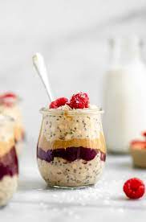

Overnight Oats

Description
This recipe is a favorite of mine. I like to make this for my breakfast mealprep.
I work late and wake up early so I need something quick and simple
that I can just grab and go in the mornings.
Ingredients
- Steel cut oats
- Milk
- Greek Yogurt
- Honey
- Fruit
Steps
- Pour one half cup of steel cut oats into a mason jar
- Add two tablespoons of greek yogurt and honey to your preffered amount of sweetness
- Add your toppings into the jar
- Use a spoon to stir the indredients in the jar so you have good distribution of toppings, honey and yogurt
- Pour one cup of milk into the jar and close tightly
- Store in the fridge overnight or for 3 to 4 hours
- Enjoy your breakfast!